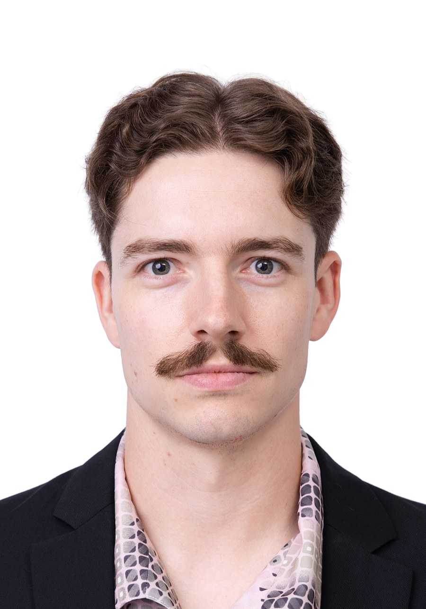
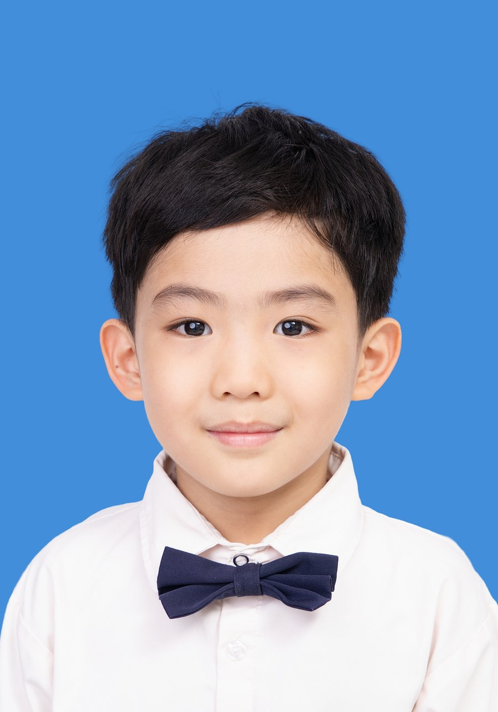
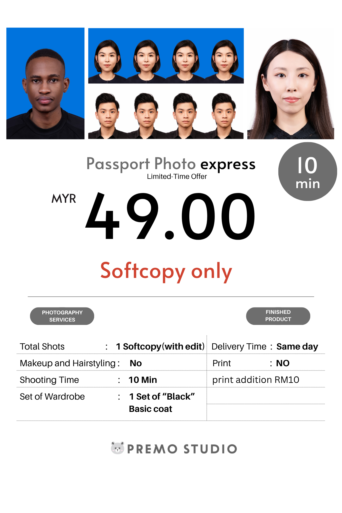
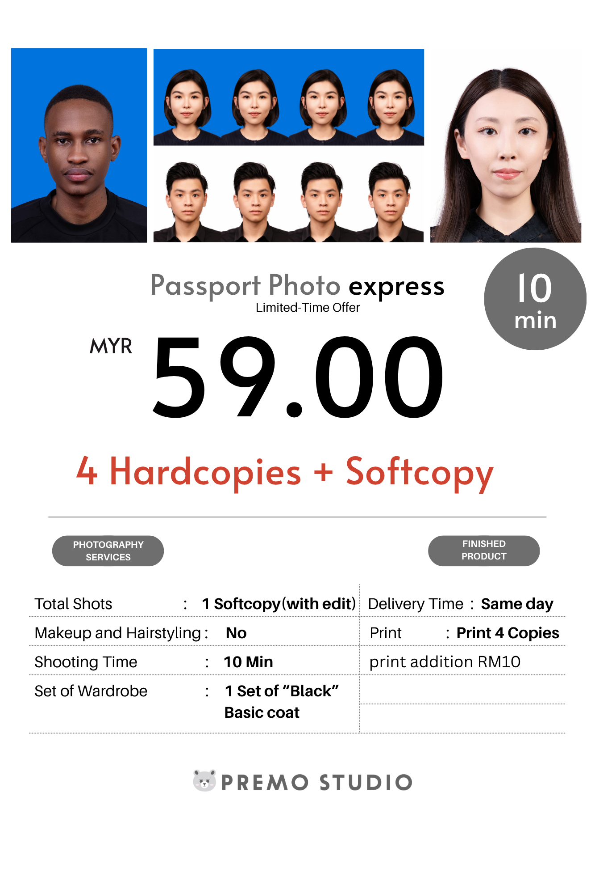

Premo Studio 新山 Mount Austin 分店，把吉隆坡总店验证多年的护照照片标准原封不动搬到新山：100% 符合政府规格、当天取件、自然修图、无双下巴保证。Our Johor Bahru (Mount Austin) branch brings the same proven standard as our KL flagship — 100% government-compliant, same-day collection, natural retouching.


护照照片被拒收，十次有九次不是你的脸的问题，是拍摄流程的问题——这些在快照亭或手机随便拍，几乎无法避免。Nine times out of ten, a rejected passport photo isn't about how you look — it's about the shoot itself. That's hard to avoid at a self-service kiosk or on your phone.
以下为限时优惠价格，实际价格请以预约时门店最新公告为准。Limited-time offer pricing shown below — please confirm current pricing when booking.

